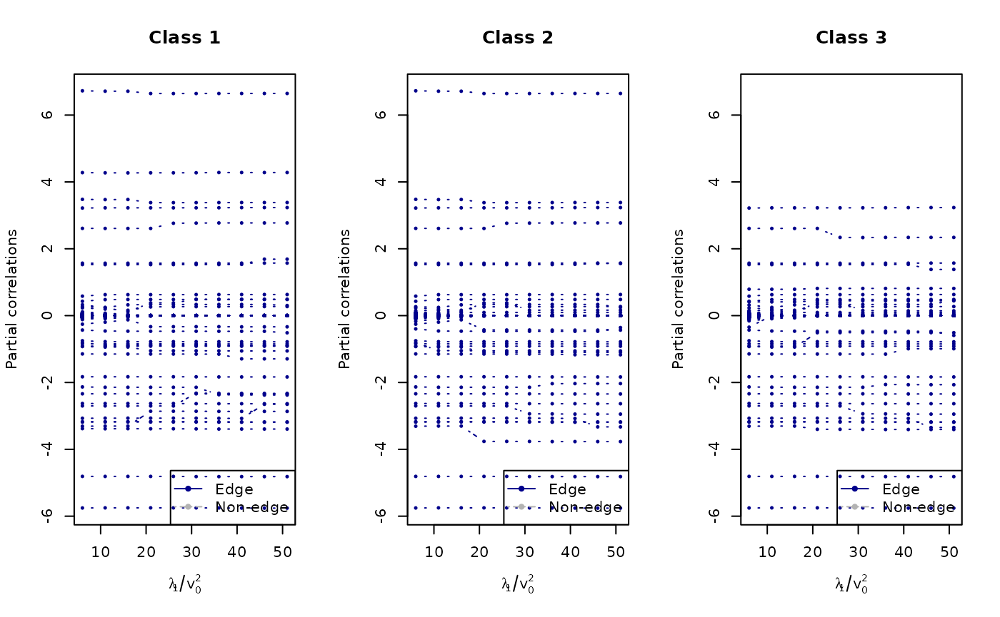

Using spike-and-slab joint graphical lasso
ssjgl.Rmd
library(spikeyglass)
data("simdat")
# TODO visualizations of simdat
# TODO summarize SIMDAT
# TODO FGLThe simulated data has 50 variables, and for the three groups there are some common graph structure with blocks of 5 variables being removed in the 2nd and 3rd group - see below.
heatmap(simdat$g[[1]], Rowv = NA, Colv = NA)
heatmap(simdat$g[[2]], Rowv = NA, Colv = NA)
heatmap(simdat$g[[3]], Rowv = NA, Colv = NA)
## Fig SSJGL
set.seed(1219)
G <- 3
p <- 50
penalty <- "fused"
lam1 <- 1
lam2 <- 1
v1 <- 1
lam.eff <- lam1 + c(1:10) * 5
v0s <- lam1/lam.eff
g <- simdat$g
# takes 4 minutes to run the below
fit1 = ssjgl(Y=simdat$Y,penalty=penalty,lambda0=1, lambda1=lam1,lambda2=lam2, v1 = v1, v0s = v0s, tol.em=1E-4, a=1, b=p, doubly=TRUE, normalize=TRUE)
#> Itr 2 Difference: 0.107682 p.slab1: 0.0198 p.slab2: 0.003246778
#> Itr 3 Difference: 0.00155 p.slab1: 0.0199 p.slab2: 0.0032027127
#> Itr 4 Difference: 0.000163 p.slab1: 0.02 p.slab2: 0.0032023583
#> Itr 5 Difference: 5.5e-05 p.slab1: 0.0201 p.slab2: 0.003202323
#> Ladder= 1 v0 = 0.16667 done. Time: 59
#> Itr 2 Difference: 0.185811 p.slab1: 0.0224 p.slab2: 0.0043147597
#> Itr 3 Difference: 4e-06 p.slab1: 0.0224 p.slab2: 0.0040014608
#> Ladder= 2 v0 = 0.09091 done. Time: 35
#> Itr 2 Difference: 0.071392 p.slab1: 0.0234 p.slab2: 0.0051659543
#> Itr 3 Difference: 0.09814 p.slab1: 0.0232 p.slab2: 0.0041793958
#> Itr 4 Difference: 2e-06 p.slab1: 0.0232 p.slab2: 0.0040016203
#> Ladder= 3 v0 = 0.0625 done. Time: 47
#> Itr 2 Difference: 0.073888 p.slab1: 0.0258 p.slab2: 0.0077700599
#> Itr 3 Difference: 0.040915 p.slab1: 0.0256 p.slab2: 0.0065586749
#> Itr 4 Difference: 1e-06 p.slab1: 0.0256 p.slab2: 0.006396565
#> Ladder= 4 v0 = 0.04762 done. Time: 47
#> Itr 2 Difference: 0.050898 p.slab1: 0.0263 p.slab2: 0.0104252343
#> Itr 3 Difference: 0.022445 p.slab1: 0.0257 p.slab2: 0.0072026046
#> Itr 4 Difference: 1.7e-05 p.slab1: 0.0256 p.slab2: 0.0072018401
#> Ladder= 5 v0 = 0.03846 done. Time: 47
#> Itr 2 Difference: 0.01096 p.slab1: 0.0256 p.slab2: 0.0104926555
#> Itr 3 Difference: 0.028619 p.slab1: 0.0256 p.slab2: 0.0097160704
#> Itr 4 Difference: 0.001476 p.slab1: 0.0256 p.slab2: 0.0088003402
#> Itr 5 Difference: 6e-06 p.slab1: 0.0256 p.slab2: 0.0087993529
#> Ladder= 6 v0 = 0.03226 done. Time: 56
#> Itr 2 Difference: 0.014845 p.slab1: 0.0256 p.slab2: 0.0114616685
#> Itr 3 Difference: 0.001442 p.slab1: 0.0256 p.slab2: 0.0104008799
#> Itr 4 Difference: 0.00012 p.slab1: 0.0256 p.slab2: 0.0103970523
#> Itr 5 Difference: 0.003389 p.slab1: 0.0256 p.slab2: 0.0103763465
#> Itr 6 Difference: 0.008073 p.slab1: 0.0256 p.slab2: 0.009611815
#> Itr 7 Difference: 0 p.slab1: 0.0256 p.slab2: 0.0096033848
#> Ladder= 7 v0 = 0.02778 done. Time: 76
#> Itr 2 Difference: 0.015802 p.slab1: 0.0256 p.slab2: 0.0121005215
#> Itr 3 Difference: 0.009708 p.slab1: 0.0256 p.slab2: 0.0108477726
#> Itr 4 Difference: 0 p.slab1: 0.0256 p.slab2: 0.0104039923
#> Ladder= 8 v0 = 0.02439 done. Time: 47
#> Itr 2 Difference: 0.031038 p.slab1: 0.0256 p.slab2: 0.0140251726
#> Itr 3 Difference: 0.002861 p.slab1: 0.0256 p.slab2: 0.0135453354
#> Itr 4 Difference: 0.004681 p.slab1: 0.0256 p.slab2: 0.0127927675
#> Itr 5 Difference: 0.007981 p.slab1: 0.0256 p.slab2: 0.0127076316
#> Itr 6 Difference: 0.00025 p.slab1: 0.0256 p.slab2: 0.0120047897
#> Itr 7 Difference: 0 p.slab1: 0.0256 p.slab2: 0.0120047878
#> Ladder= 9 v0 = 0.02174 done. Time: 82
#> Itr 2 Difference: 0.015984 p.slab1: 0.0256 p.slab2: 0.0142713681
#> Itr 3 Difference: 3e-06 p.slab1: 0.0256 p.slab2: 0.013602531
#> Ladder= 10 v0 = 0.01961 done. Time: 33
#
#
#
# # saving since it takes long
# save(fit1, file = here::here("data/fit1.Rdata"))
# load(here::here("data/fit1.Rdata"))
# Get plot titles
mains <- c(paste0("Class 1"),
paste0("Class 2"),
paste0("Class 3"))
plot_path(lam1/v0s, fit1, thres = 0, normalize = F, xlab = expression(lambda[1]/v[0]^2), ylab = "Partial correlations", main = mains, par = c(1, 3))